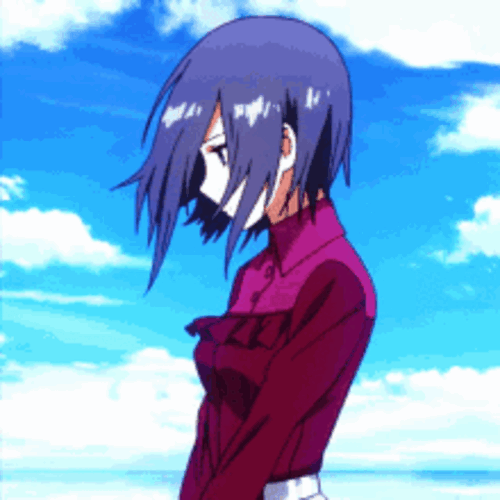

-
Anime: Attack on Titan
Eren Jaeger is a former member of the Scout Regiment and the main protagonist of Attack on Titan.
He is the only son of Grisha and Carla Jaeger, the younger paternal half brother of Zeke Jaeger,
and the current holder of the Attack Titan, Founding Titan, and the War Hammer Titan.
-
Anime: Attack on Titan
Mikasa Ackermann is one of the two deuteragonists of the series.
She is the last descendant of the Shogun clan that stayed on Paradis Island, thereby related to the
Azumabito family, and holds significant political power in Hizuru.
-
Anime: Attack on Titan
Armin Arlelt is a soldier in the Scout Regiment. He is also a childhood friend of Eren Jaeger
and Mikasa Ackermann, and is one of the two deuteragonists of the series. Although he appears to be
the physically weakest of the 104th Cadet Corps, his high intelligence and strategic genius makes him
an invaluable asset, though he does not consider himself to be one and is known to have low self-esteem.
-
Anime: Attack on Titan
Levi Ackermann, often formally referred to as Captain Levi, is the squad Captain
of the Special Operations Squad within the Scout Regiment, and is said to be humanity's strongest soldier.
-
Anime: Attack on Titan
Annie Leonhart is a graduate of the 104th Cadet Corps and former member of the Military Police
Regiment. Her exceptional skill with swords and unarmed combat earned her the 4th rank, but she is
noted to be a lone wolf that struggles to work with others.
-
Anime: Attack on Titan
Historia Reiss is the current Queen of the Walls. She is a graduate of the 104th Cadet Corps and a former
member of the Scout Regiment. She is also the illegitimate child of the nobleman Rod Reiss and the last
remaining member of the Reiss royal family.
-
Anime: Hunter x Hunter
Gon Freecss is a Rookie Hunter and the son of Ging Freecss.
Finding his father is Gon's motivation in becoming a Hunter.
-
Anime: Hunter x Hunter
Killua Zoldyck is the third child of Silva and Kikyo Zoldyck and the heir of the Zoldyck Family, until he
runs away from home and becomes a Rookie Hunter. He is the best friend of Gon Freecss and is currently traveling with Alluka Zoldyck.
-
Anime: Hunter x Hunter
Kurapika is the last survivor of the Kurta Clan. He is a Blacklist Hunter and the current leader of the organization founded by Light Nostrade.
He is a member of the Zodiacs with the codename "Rat". His goal is to avenge his clan and recover the remaining Scarlet Eyes.
-
Anime: Hunter x Hunter
Leorio Paradinight is a Rookie Hunter and a member of the Zodiacs with the codename "Boar". He is currently a medical student, with a goal to become a doctor.
-
Anime: Hunter x Hunter
Hisoka Morow is a Hunter and former member #4 of the Phantom Troupe; his physical strength ranked third
in the group. He is always in search for strong opponents, and would spare those who have great potential,
such as Gon and Killua in order for them to get strong enough to actually challenge him.
-
Anime: Hunter x Hunter
Illumi Zoldyck is the eldest child of Silva and Kikyo Zoldyck. During the 287th Hunter Exam,
he appeared under the guise of Gittarackur. At Hisoka's request, Illumi joins the Phantom Troupe as Uvogin's replacement, becoming Troupe member #11.
-
Anime: Jujutsu Kaisen
Yuji Itadori is the main protagonist of the Jujutsu Kaisen series. He is the son of Jin Itadori and grandson of
Wasuke Itadori who was living a normal life until her encountered Megumi and ate one of Sukuna's fingers. After becoming
Sukuna's vessel, Yuji began attending Tokyo Jujutsu High alongside Megumi and Nobara as first-year students.
-
Anime: Jujutsu Kaisen
Megumi Fushiguro is the deuteragonist of the Jujutsu Kaisen series. He is a first-year student at Tokyo Jujutsu High and
also a descendant of the Zenin family.
-
Anime: Jujutsu Kaisen
Nobara Kugisaki is the tritagonist of the Jujutsu Kaisen series. She is a first-year student and grade 3 jujutsu sorcerer
at Tokyo Jujutsu High studying under Satoru Gojo alongside Yuji and Megumi.
-
Anime: Jujutsu Kaisen
Toge Inumaki is a supporting character in the Jujutsu Kaisen series. He is a descendant of the Inumaki Family
who inherited the rare and powerful cursed speech technique. Toge is a second-year at Tokyo Jujutsu High alongside
Yuta, Maki, and Panda.
-
Anime: Jujutsu Kaisen
Yuta Okkotsu is the main protagonist of Jujutsu Kaisen's prequel series. He was initially a special grade cursed
human haunted by his late childhood friend, Rika Orimoto. Satoru Goju mentored Yuta and enrolled him at Tokyo
Jujutsu Hgh. Yuta is currently a second-year student at Jujutsu High where he works as a jujutsu sorcerer.
-
Anime: Jujutsu Kaisen
Satoru Gojo is one of the main protagonists of Jujutsu Kaisen. He is a special grade jujutsu sorcerer and a teacher at
Tokyo Jujutsu High.
-
Anime: Naruto
Naruto Uzumaki is a shinobi of Konohagakure's Uzumaki clan. He became the jinchuriku of the Nine-Tailes on the day of his birth — a fate that caused him
to be shunned by most of Konoha throughout his childhood. After joining Team Kakashi, Naruto worked hard to gain the village's
acknowledgement all the while chasing his dream to become Hokage.
-

Anime: Naruto
Sasuke Uchiha is one of the last surviving members of Konohagakure's Uchiha clan. After his older brother, Itachi,
slaughtered their clan, Sasuke made it his mission in life to avenge them by killing Itachi. He is added to Team 7
upon becoming a ninja and, through competition with his rival and best friend, Naruto Uzumaki, Sasuke starts
developing his skills.
-
Anime: Naruto
Kakashi Hatake is a shinobi of Konohagakure's Hatake clan. Famed as Kakashi of the Sharingan, he is one of Konoha's most
talented ninja, regularly looked to for advice and leadership despite his personal dislike of responsibility.
-
Anime: Naruto
Itachi Uchiha was a shinobi of Konohagakure's Uchiha clan who served as an Anbu Captain. He later became an
international criminal after murdering his entire clan, sparing only his younger brother, Sasuke.
He afterwards joined the international criminal organisation known as Akatsuki, whose activity brought
him into frequent conflict with Konoha and its ninja — including Sasuke who sought to avenge their clan by killing Itachi.
-
Anime: Naruto
Sai Yamanaka is the Anbu Chief of Konohagakure's Yamanaka clan. Prior to this, he was a Root member.
As per standard Root training, Sai was conditioned to remove all emotions and as such, had difficulty connecting
with others. When he is added to Team Kakashi as a replacement for the rogue Sasuke Uchiha, Sai begins to learn more
about people's feelings and tries to develop his personality and identity by forming genuine bonds and rediscovering the emotions he was taught to suppress.
-
Anime: Naruto
Minato Namikaze was the Fourth Hokage of Konohagakure. He was renowned all over the world as Konoha's Yellow Flash.
He died during the Nine-Tailed Demon Fox's Attack, sacrificing his life to seal a part of the Nine-Tails into his newborn son, Naruto Uzumaki.
-
Anime: Tokyo Ghoul
Kaneki Ken is the main protagonist of the Tokyo Ghoul Series. He is currently Touka Kirishima's husband, and the father of Ichika Kaneki.
Previously, he was a student who studied Japanese literature at Kamii University, living a relatively normal life.
However, this quickly changed after Rize Kamishiro's kakuhou was transplanted into him and transformed him into a one-eyed ghoul. Kaneki is the first known artificial one-eyed ghoul.
-

Anime: Tokyo Ghoul
Touka Kirishima is a ghoul who is an ex-waitress at Anteiku.
She is the daughter of Arata Kirishima and Hikari Kirishima, the older sister of Ayato Kirishima,
the wife of Ken Kaneki and the mother of Ichika Kaneki.
-
Anime: Tokyo Ghoul
Koutarou Amon is a former First Class Ghoul Investigator. He was Kureo Mado's last partner and
his last partner was Akira Mado. He was subsequently declared dead by the CCG, though his body was
never recovered, and was posthumously promoted to Special Class for his distinguished service.
During the Rushima Landing Operation, he reappeared alive as an artificial one-eyed ghoul.
-
Anime: Tokyo Ghoul
Juuzou Suzuya is a Special Class Ghoul Investigator. In the past, he went by the name Rei Suzuya.
He was first partnered with Yukinori Shinohara, and is now currently the leader of Suzuya Squad.
-
Anime: Tokyo Ghoul
Akira Mado is a former Associate Special Class Ghoul Investigator, the mentor of Haise Sasaki
and the daughter of Kureo Mado and Kasuka Mado who was previously partnered with Koutarou Amon.
-
Anime: Tokyo Ghoul
Ayato Kirishima is Touka Kirishima's younger brother and goes by the alias Black Rabbit.